设计研究 · 持续更新
按学习场景比较竞品，不只比较页面长什么样
把学习入口、课程预览、白板学习、在线 IDE、AI 学伴、知识版图与开发者贡献拆开研究。每个参考都保留官方链接、实页截图、可借鉴模式与不建议照搬的部分。
- 覆盖场景
- 7 个
- 参考产品
- 10 个
- 本次采集
- 2026-10-17
快速判断
跨场景对比矩阵
主参考代表当前最值得吸收的模式，补充参考用于校正边界，避免照搬单一产品。
| 场景 | 主参考 | 最强模式 | 对当前方案的机会 |
|---|
| 首页学习入口 | NVIDIA DLI ↗ + Hyperknow ↗ | DLI 建立开发者训练入口；Hyperknow 在同一输入框切换课程生成与即时协助 | 首页保留一个目标输入区，用“学习 / 解决问题”明确分流，继续学习与知识地图作为后续入口 |
| 课程预览 | Hyperknow ↗ | 左侧资源导航，右侧展开选中单元内的讲次、项目与评估 | 区分单元、资料、练习三类资源，让用户先定位内容类型，再判断当前单元的学习动作 |
| 白板学习 | Hyperknow ↗ | 板书画布、课程要点、文字/语音交流和对话历史保持同一学习上下文 | 画布保持主视角，AI 学伴作为右侧浮窗；开始前选择交流方式，学习中可暂停、提问与恢复 |
| 在线 IDE | HiDevLab ↗ | 环境、镜像、算力与数据保留规则前置 | IDE 固定在画布工作区，AI 学伴贴合右侧，运行上下文自动带入 |
| AI 学伴 | Khanmigo ↗ | 通过追问引导理解，而不是直接给答案 | 问答、可视化解释、笔记和计划共享当前板书上下文 |
| 知识版图 | JetBrains Academy · Hyperskill ↗ | 按领域和先修关系组织知识，并同时显示已学、待学与项目覆盖状态 | 三大领域下钻到非线性知识网络，明确“我在哪里、已经完成什么、下一步探索什么” |
| 开发者贡献 | Kaggle Benchmarks ↗ | 贡献内容可以复现、比较、排行并追溯 | 经验贴升级为带环境、指标、证据和审核状态的贡献资产 |
01
首页学习入口用一个目标输入区承接两种意图：学习与解决问题
DLI 提供开发者训练的直接对标；Hyperknow 提供同一输入区切换“课程生成 / 即时协助”的交互启发。
当前问题：怎样让用户先表达“我想学什么”或“我正在解决什么”，同时仍能继续已有课程和进入个人知识地图？
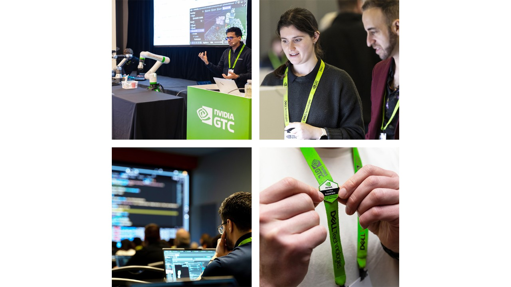
官方页面图 · 2026-10-17
NVIDIA Deep Learning Institute
打开官网 ↗DLI 将自学课程、讲师工作坊、学习路径和认证放在统一训练入口，并强调专家课程、真实案例、云端 GPU 实验环境和可获得的证书。
可借鉴
- 首屏先说清训练面向的开发者能力，而不是罗列资源数量。
- 把自学、实操环境、专家指导和能力证明连接成完整闭环。
- 课程入口同时展示领域、学习方式和最终可获得的实践结果。
不照搬：DLI 的入口更像训练目录；我们的首要任务是先理解用户目标，再从课程与问题解决链路中选择合适响应。
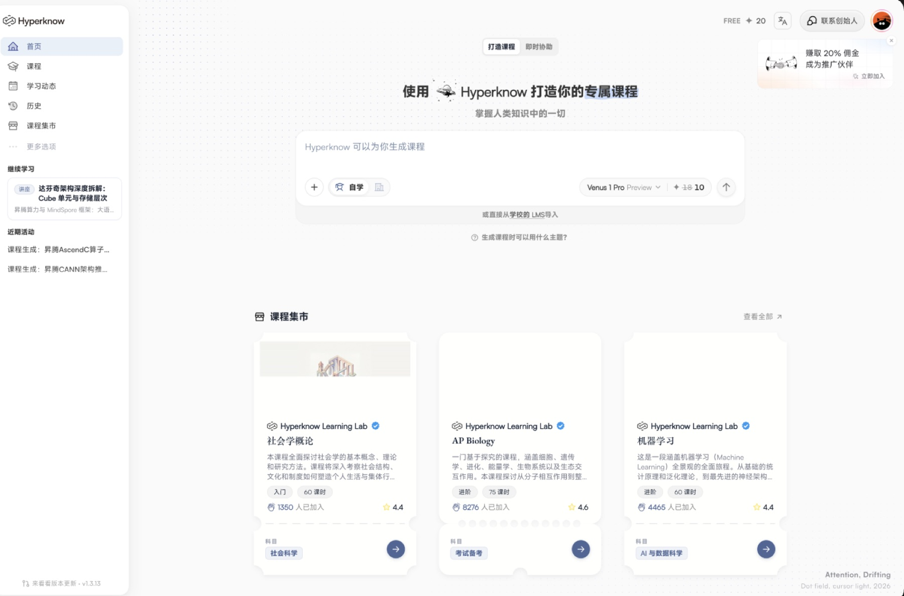
研究截图 · 2026-10-17
交互参考 · 双意图目标输入
首页在同一输入框上方区分“打造课程”和“即时协助”，用户不必先理解产品结构，只需先选择想系统学习还是立刻获得帮助。
转译到当前方案
- 将模式转译为“学习 / 解决问题”，两个标签共用同一目标输入框。
- 学习模式组织课程与长期计划；解决问题模式接收任务、报错、环境和期望结果。
- 输入区下方保留继续学习，知识地图入口放在继续学习标题后作为全局视角切换。
不照搬：不使用“自学 / 即时协助”这类实现视角文案；用户关心的是目标类型，不是系统将采用哪一种生成方式。
02
课程预览左侧定位课程资源，右侧展开选中单元的完整内容
Hyperknow 把课程入口、单元导航和单元内部讲次放在同一预览页，用户能先看全局，再判断从哪里开始。
当前问题：如何让用户看懂课程由哪些单元组成，并区分单元、资料、练习三类学习资源及其完成状态？
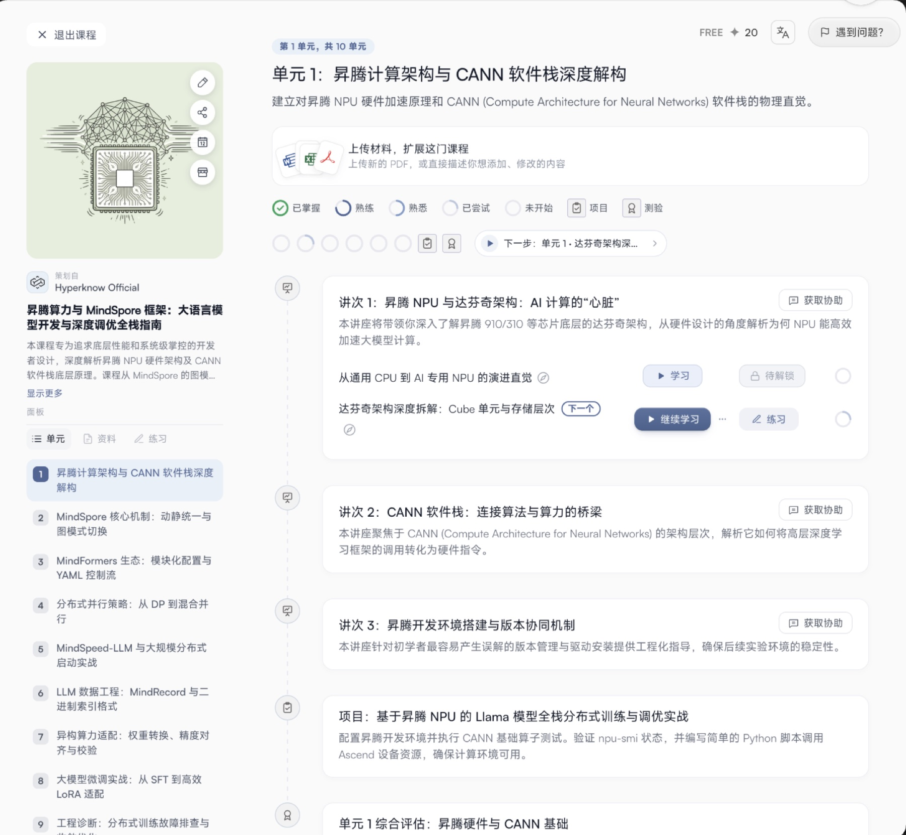
研究截图 · 2026-10-17
直接参考 · 课程资源与单元详情
左侧先在“单元 / 资料 / 练习”三类资源间切换；单元列表承担全局导航。选中单元后，右侧沿时间线展开讲次、项目与综合评估，并保留下一步动作。
可借鉴
- 左侧负责资源类型和单元定位，右侧只讲清当前单元内部结构。
- 讲次、项目、测验使用不同图标和状态，避免把所有内容都叫“课节”。
- 已掌握、熟练、熟悉、已尝试、未开始等状态形成课程级进度语言。
- 下一步入口跟随当前进度，而不是固定跳回第一项。
不照搬：上传材料属于课程编辑能力，不应默认占据普通学习者的预览主链路；课程封面也不应挤压结构空间。
官方页面图 · 2026-10-17
补充参考 · 实践环境与能力证明
DLI 将实操实验、云端 GPU 环境、真实案例和部分课程证书作为学习价值的一部分，课程预览不只介绍知识目录。
转译到当前方案
- 课程首屏说明适用基础、预计时长、实践数量和环境要求。
- 选中单元时同时显示会完成的任务、会留下的证据和将点亮的能力。
- 真实环境复现信息与课程结构并列，但保持为辅助判断区。
不照搬：认证与课程完成不能混为一谈；证书、能力点亮和真实任务证据需要分别表达。
03
白板学习板书是主内容，AI 交流围绕当前板书持续发生
Hyperknow 将手写板书、示意图、课程要点、文字/语音交流和对话历史放在同一学习上下文中。
当前问题：怎样让用户决定板书的进行与停止状态，并能对任何不理解的内容随时提问，同时不遮挡老师原始板书？
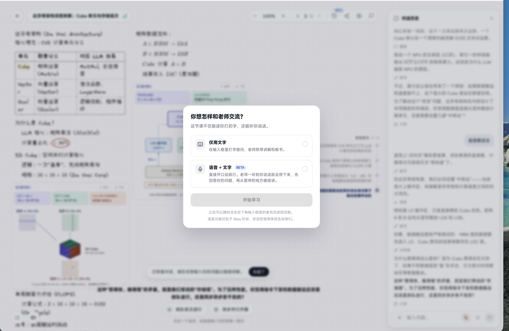
研究截图 · 2026-10-17
交互参考 · 仅文字 / 语音 + 文字
正式开始前先选择与“老师”的交流方式。语音模式下，用户开口后讲解会暂停，先回答问题，再从暂停位置继续。
可借鉴
- 将语音/文字作为交流偏好，而不是两套学习页面。
- 语音提问触发“暂停—回答—恢复”，使板书状态始终可感知。
- 学习中允许随时切换输入方式，避免开始前的选择成为限制。
不照搬：不把交流方式做成阻断式必选步骤；可给出推荐默认值，并允许直接进入后再调整。
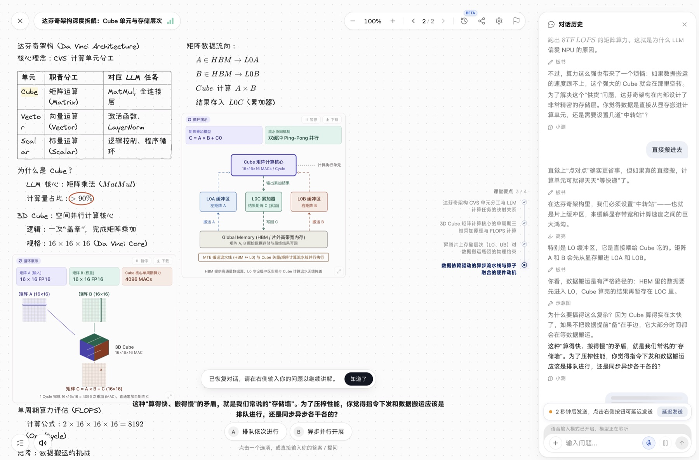
研究截图 · 2026-10-17
结构参考 · 画布主视角 + 右侧上下文
板书自然铺在大画布上，混合手写文字、表格、公式、图解与选择题；右侧保留与板书对应的对话历史，画布边缘弱化展示课程要点和当前进度。
转译到当前方案
- 老师原始板书保持黑色/深灰自然排版，不额外框成卡片。
- 课程要点收进课节标题后的大纲按钮；AI 学伴中只弱展示链路进度和当前要点。
- 选中板书后出现“问一下、用图解释、换个说法”；临时解释层用浅蓝半透明描图纸视觉并连接原句。
- 提问、语音、笔记和计划都属于右侧 AI 学伴的子功能；学伴可悬浮、收起，并在 IDE 出现时贴合 IDE 右侧。
不照搬：右侧对话历史不固定占用过宽空间；画布始终是学习主区域，学伴宽度和出现时机随任务切换。
04
在线 IDE固定工作区与可恢复环境，比堆叠工具栏更重要
IDE 进入白板后应成为稳定工作区，运行结果、终端和 AI 学伴围绕实践任务协作。
当前问题：如何兼顾代码、终端、运行结果与课程上下文，并支持用户自由调整面板？
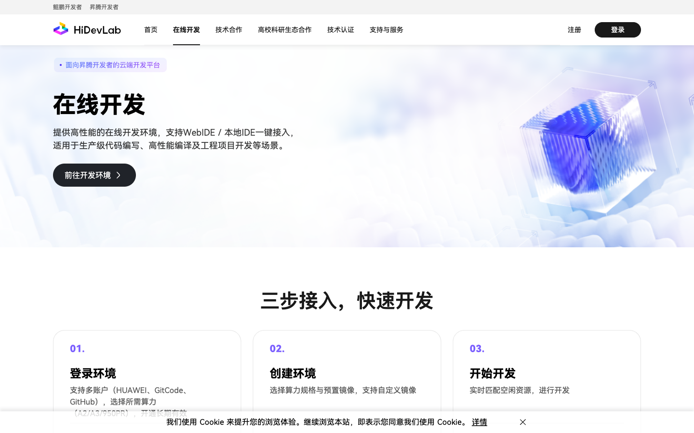
采集于 2026-10-16
直接参考 · 昇腾在线开发环境
在进入环境前说明算力规格、镜像、资源调度、闲置关机与数据保留规则，降低使用风险。
可借鉴
- 实践开始前确认算力、镜像、预计卡时和保存目录。
- 课程为 IDE 预置工程与运行命令，减少环境准备。
- 运行日志、关键指标和环境版本自动成为验证证据。
不照搬：无需保留完整 WebIDE 的资源管理侧栏，课程场景只显示任务所需面板。
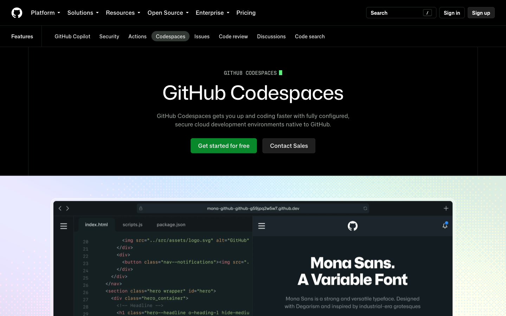
采集于 2026-10-16
补充参考 · 可复现开发环境
以仓库配置创建一致环境，让用户在浏览器或本地编辑器中恢复同一工程上下文。
可借鉴
- 环境配置和课程版本绑定，支持中断后恢复。
- 主区域默认代码编辑，底部终端/日志，右侧 AI 学伴。
- 允许拖拽重排，但保留“一键恢复课程布局”。
不照搬：通用 IDE 的扩展和账户功能会增加噪声，学习模式需做任务化裁剪。
05
AI 学伴学伴负责解释、诊断与组织，不替代用户完成学习
同一学伴在首页、课程预览、白板、IDE 和知识地图中共享个人状态与当前上下文。
当前问题：怎样统一问答、能力缺口、推荐路线、笔记和计划，又不让面板显得过重？
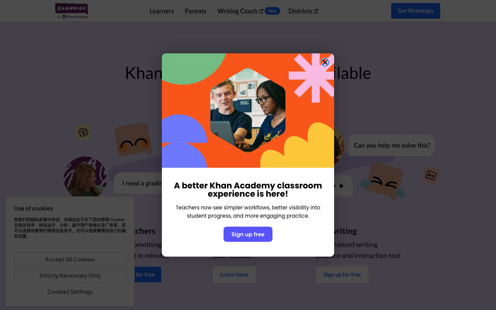
采集于 2026-10-16
直接参考 · AI 导师
核心价值是“引导用户自己得出答案”，并通过对话持续感知学习上下文。
可借鉴
- 默认提供与当前板书/代码相关的建议问题。
- 回答中明确引用课程要点、日志或知识节点。
- 能力缺口与路线建议给出原因和证据。
不照搬：用户可以直接要求答案，但系统应同时展示推理依据与可验证步骤。
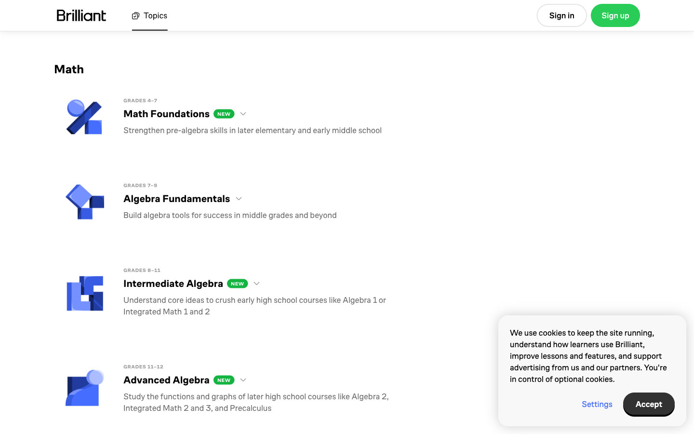
采集于 2026-10-16
补充参考 · 嵌入式导师
导师能看见用户正在处理的问题，并通过逐步提示定位卡点，减少重复描述上下文。
可借鉴
- 学伴标题区展示当前课节与进行中的课程要点。
- 笔记和计划作为右上角子功能唤出。
- 完整知识地图与长期资产通过链接进入独立页面。
不照搬：能力同心环属于全局诊断，不应长期占据白板中的对话区域。
06
知识版图知识关系与个人进度叠在同一张图上
Hyperskill 将主题按领域和先修关系组织，同时显示课程需要覆盖什么、项目已经覆盖什么，以及用户已学与待学的数量。
当前问题：怎样让用户一眼看见自己处于哪个领域和阶段，哪些已经完成，哪些是当前任务，下一步还能探索什么？
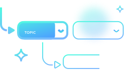
官方知识地图示意 · 2026-10-17
直接参考 · 领域、先修关系与学习状态
知识地图由数千主题按领域组织，并用先修关系连接。页面区分课程需要学习、已经学习和项目已覆盖的主题；展开分类后可以查看某个主题的前置与后续依赖。
可借鉴
- 领域、知识节点、课程覆盖与个人状态使用不同图形编码，避免混成一层。
- 用户选择课程或项目后，只高亮相关节点和先修关系。
- 顶部持续显示“待学习 / 已学习 / 实践覆盖”概览，让当前位置可量化。
- 当前节点同时展示必须先学和可以继续探索的相邻节点。
查看知识地图竞品分析原始板 ↗
不照搬：昇腾知识并不完全是单棵先修树；跨领域支撑关系、工具节点、实践任务和验证证据需要保留网络结构。
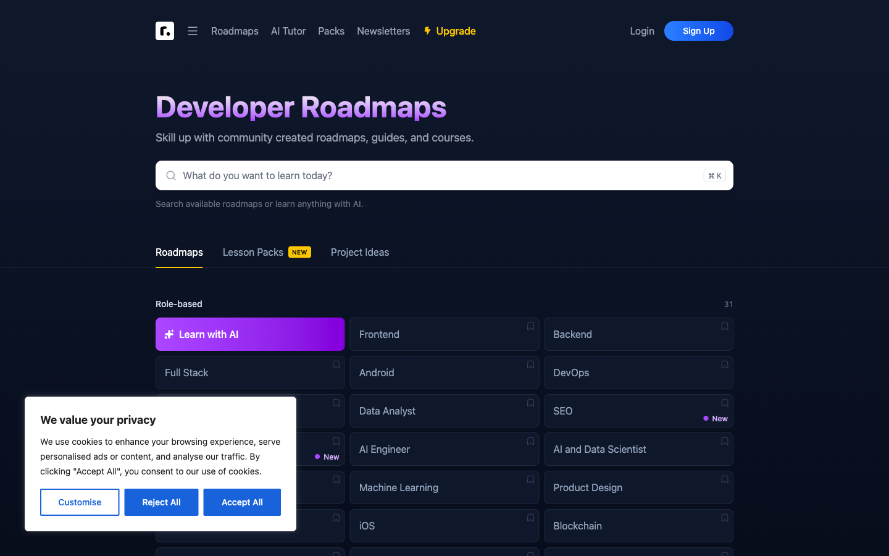
采集于 2026-10-16
补充参考 · 推荐路线与完成标记
roadmap.sh 把复杂知识压缩成可执行的推荐顺序，并允许用户跳转和标记完成，补足 Hyperskill 知识关系明确但全局导航较重的问题。
转译到当前方案
- 全景层先显示 CANN、生成式 AI 与大语言模型、智能体三大领域岛屿。
- 点击领域后下钻并放大对应分区，其他领域退到背景。
- 节点深浅表达了解、掌握、实践、贡献；高亮线只表示本次推荐路线。
- 课程作为覆盖知识节点的资源，不单独成为一个知识区域。
不照搬：不把推荐路线当成唯一正确顺序；实线表示必学依赖，虚线表示支撑或可选关系。
07
开发者贡献从“发经验贴”升级为可复现、可比较的贡献资产
贡献楼层负责发现优质实践；独立页面负责验证闭环、积分解释与领域榜单。
当前问题：如何让经验回填经过审核与环境复现后获得积分，并清楚说明用户为什么上榜？
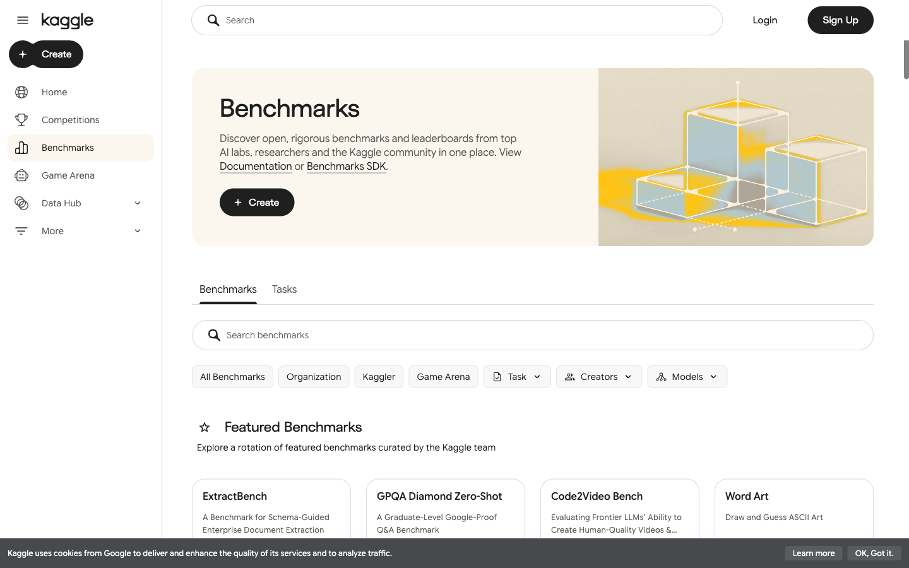
采集于 2026-10-16
机制参考 · 可验证贡献
贡献者定义任务、数据和断言，运行结果形成可追溯版本，并通过榜单、图表和讨论进行比较。
可借鉴
- 经验回填包含环境、代码、日志、指标和复现步骤。
- 审核状态区分待验证、已复现、推荐实践与过期。
- 实践榜比较结果；开发榜统计被复现、被引用和帮助他人的贡献。
不照搬：不能只按单一性能分数排行，还要奖励可复用性、解释质量和持续维护。
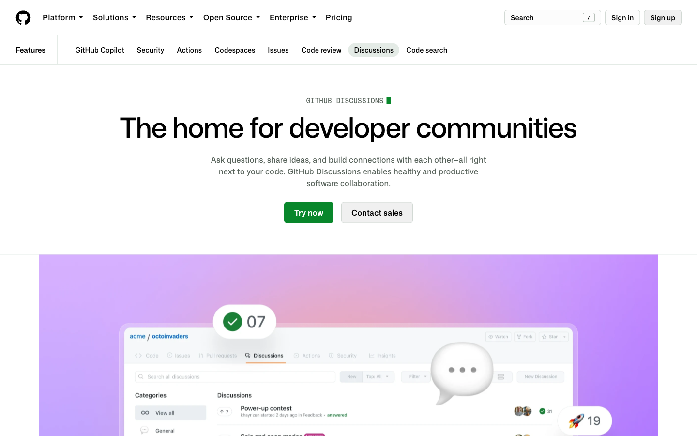
采集于 2026-10-16
社区参考 · 经验沉淀
将开放讨论与代码任务区分，并通过分类、标签、置顶、最佳回答和洞察数据沉淀社区知识。
可借鉴
- 贡献按 CANN、生成式 AI 与大语言模型、智能体筛选。
- 优质回复与复现报告可附着在原贡献下。
- 榜单展示得分原因，而不是只显示总分。
不照搬：自由讨论不直接等同于已验证经验，公开前需要结构化审核链路。
归纳
当前方案应坚持的五个设计决定
这些决定来自跨竞品共同模式，并结合昇腾知识密集、实践依赖环境和社区贡献需要复现的特点。
01 · 双意图入口首页区分“学习 / 解决问题”
两种意图共用一个目标输入区；继续学习和知识地图承接已有学习状态。
02 · 资源分层课程预览先定位类型，再展开单元
左侧区分单元、资料、练习并完成导航；右侧呈现选中单元的讲次、项目与综合评估。
03 · 上下文连续板书、语音、对话和 IDE 共享当前上下文
画布保持主视角，AI 解释、笔记和计划围绕当前板书与代码出现，不写回老师原始板书。
04 · 位置可感知知识版图同时表达关系与个人进度
领域、先修关系、课程覆盖、已完成状态和本次推荐路线分层编码，让用户知道自己在哪里。
05 · 贡献可验证积分来自可复现影响
经验回填经过审核、环境复现和引用后计分，榜单明确展示每一笔得分原因。
研究说明：截图仅用于内部产品研究与界面比较，版权归各产品所有。页面表现与功能会变化，判断以采集日期和官方链接为准。后续新增竞品时，应先确定它补充哪个场景和哪条判断，再增加卡片，避免堆积无结论的截图。